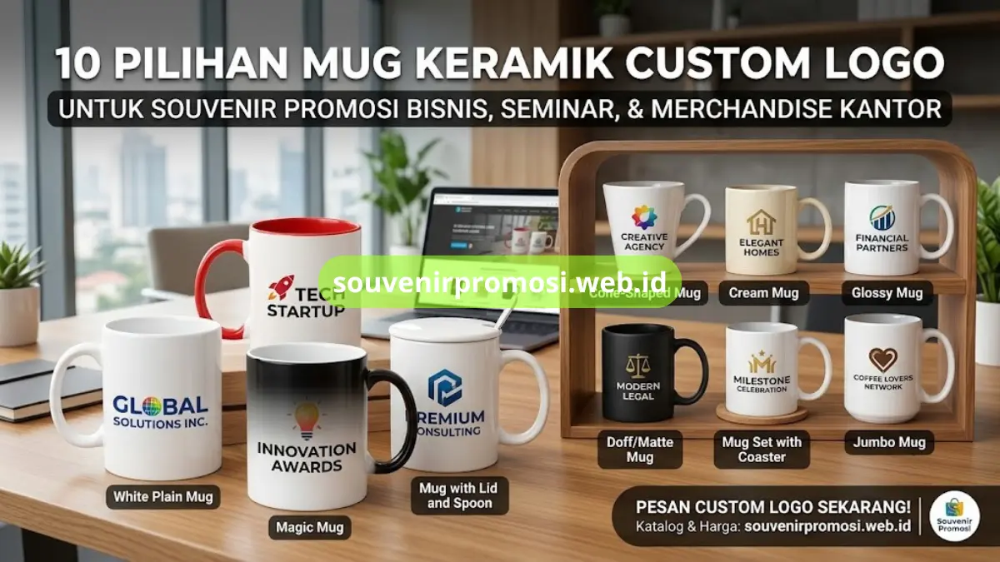

Mug keramik custom logo adalah pilihan souvenir promosi praktis untuk perusahaan karena mudah dicetak logo, tahan lama, dan dipakai berulang setiap hari. Artikel ini merangkum sepuluh jenis mug keramik yang tersedia di katalog Souvenir Promosi, lengkap dengan bahan, teknik cetak, dan kegunaannya untuk kebutuhan korporat.
Setiap jenis dapat dipesan dengan logo perusahaan langsung melalui souvenirpromosi.web.id, baik untuk kebutuhan seminar, hampers, maupun merchandise kantor.
Poin Penting
- Sepuluh jenis mug keramik custom logo tersedia untuk berbagai kebutuhan souvenir promosi.
- Setiap jenis memiliki bahan, ukuran, dan teknik cetak yang berbeda-beda.
- Mug keramik cocok dipakai sebagai souvenir perusahaan, instansi pemerintah, dan acara korporat.
- Pemesanan custom logo dapat dilakukan langsung melalui Souvenir Promosi.
- Katalog lengkap dan harga tersedia di situs resmi souvenirpromosi.web.id.
Daftar Isi
- Apa itu Mug Keramik Custom Logo?
- Kenapa Mug Keramik Dipilih?
- 1. Mug Keramik Putih Polos
- 2. Mug Keramik Dua Warna
- 3. Mug Keramik Magic
- 4. Mug Keramik Bentuk Kerucut
- 5. Mug Keramik Krem
- 6. Mug Keramik dengan Tutup & Sendok
- 7. Mug Keramik Glossy
- 8. Mug Keramik Doff
- 9. Set Mug Keramik & Tatakan
- 10. Mug Keramik Jumbo
- Cara Memesan di Souvenir Promosi
- FAQ
Apa itu Mug Keramik Custom Logo untuk Souvenir Promosi?
Mug keramik custom logo adalah mug berbahan keramik food grade yang permukaannya dicetak logo atau desain perusahaan menggunakan teknik sublimasi atau cetak digital. Jenis souvenir ini banyak dipilih instansi dan perusahaan karena bentuknya fungsional, dipakai setiap hari untuk kopi atau teh, sehingga logo perusahaan lebih sering terlihat dibandingkan souvenir yang jarang dipakai.
Selain fungsinya sebagai wadah minum, mug keramik custom logo juga sering dijadikan bagian dari hampers, goodie bag seminar, atau merchandise ulang tahun perusahaan.
Souvenir Promosi menyediakan mug keramik custom logo dalam berbagai bentuk, warna, dan ukuran yang dapat disesuaikan dengan identitas visual brand. Setiap desain logo dapat dicetak penuh warna (full color) sehingga hasil cetakan tetap tajam meski logo memiliki gradasi warna yang kompleks.
Kenapa Mug Keramik Dipilih sebagai Souvenir Promosi Perusahaan?
Mug keramik dipilih sebagai souvenir promosi karena harganya terjangkau untuk pemesanan dalam jumlah besar, mudah dicetak logo, dan memiliki usia pakai yang panjang dibandingkan souvenir sekali pakai. Karena dipakai berulang di rumah maupun kantor, mug keramik custom logo berfungsi sebagai media promosi jangka panjang yang terus mengingatkan penerima pada brand perusahaan setiap kali digunakan.
Selain itu, mug keramik relatif mudah dikemas dalam jumlah besar untuk kebutuhan seminar, pelatihan, ulang tahun perusahaan, hingga kunjungan tamu instansi pemerintah. Souvenir Promosi menyediakan layanan cetak logo satuan maupun grosir sehingga cocok untuk kebutuhan korporat dari skala kecil hingga ribuan unit.
1. Mug Keramik Putih Polos Custom Logo
Mug keramik putih polos custom logo adalah jenis mug paling umum dipakai untuk souvenir promosi karena permukaan putihnya membuat warna logo tercetak lebih jelas dan kontras. Mug ini biasanya berkapasitas sekitar 300 sampai 350 mililiter, dilapisi glasir glossy, serta aman digunakan untuk minuman panas maupun dingin.
Karena harganya relatif terjangkau untuk pemesanan dalam jumlah besar, mug keramik putih polos sering menjadi pilihan utama instansi dan perusahaan untuk merchandise rutin, goodie bag seminar, atau souvenir tahun baru kantor. Souvenir Promosi menyediakan mug jenis ini dengan pilihan cetak logo satu sisi maupun dua sisi sesuai kebutuhan desain perusahaan.
2. Mug Keramik Dua Warna Custom Logo
Mug keramik dua warna memiliki bagian dalam dan pegangan (handle) berwarna berbeda dari bagian luar yang tetap putih untuk area cetak logo. Kombinasi warna ini membuat tampilan mug lebih menarik secara visual dan dapat disesuaikan dengan warna identitas brand perusahaan, misalnya merah, biru, hijau, atau kuning.
Jenis mug ini cocok digunakan sebagai souvenir promosi untuk acara korporat yang ingin menonjolkan warna korporat secara konsisten pada setiap merchandise yang dibagikan. Pemesanan warna handle dapat disesuaikan dengan stok yang tersedia di Souvenir Promosi.
3. Mug Keramik Magic Custom Logo
Mug keramik magic adalah mug dengan lapisan tinta khusus yang berubah warna atau menampilkan desain tersembunyi saat terkena air panas. Efek visual ini membuat mug magic menjadi souvenir promosi yang lebih interaktif dan sering dipakai untuk kampanye produk baru, promo musiman, atau souvenir eksklusif untuk klien VIP.
Karena proses produksinya lebih kompleks dibandingkan mug polos, mug magic biasanya dipesan untuk kebutuhan kampanye promosi khusus dengan jumlah yang disesuaikan target audiens.
4. Mug Keramik Bentuk Kerucut Custom Logo
Mug keramik bentuk kerucut memiliki desain badan mug yang meruncing dari bawah ke atas sehingga tampil lebih ramping dan modern dibandingkan mug standar berbentuk silinder.
Bentuk ini banyak dipilih perusahaan dengan citra brand yang ingin tampil lebih kontemporer, misalnya perusahaan startup, agensi kreatif, atau instansi yang mengusung desain minimalis. Area cetak logo pada mug kerucut tetap luas sehingga logo dan tagline perusahaan dapat tercetak dengan jelas.

5. Mug Keramik Krem Custom Logo
Mug keramik krem memiliki warna dasar krem atau gading yang memberi kesan hangat dan elegan dibandingkan mug putih standar. Jenis mug ini sering dipilih untuk souvenir promosi bertema premium, misalnya hampers korporat untuk klien penting, souvenir pernikahan dinas, atau merchandise ulang tahun perusahaan dengan konsep eksklusif.
Warna krem juga membuat cetakan logo berwarna gelap seperti hitam atau cokelat tua terlihat lebih menyatu secara estetika.
6. Mug Keramik dengan Tutup dan Sendok Custom Logo
Mug keramik dengan tutup dan sendok dilengkapi penutup keramik atau stainless serta sendok kecil yang menyatu sebagai satu set fungsional. Fitur tambahan ini membuat mug lebih praktis digunakan di meja kerja karena minuman tetap hangat lebih lama dan tidak perlu sendok terpisah.
Souvenir jenis ini cocok untuk merchandise korporat kelas menengah ke atas, misalnya souvenir untuk direksi, tamu instansi, atau hadiah loyalitas karyawan.
7. Mug Keramik Glossy Custom Logo
Mug keramik glossy memiliki permukaan mengilap yang membuat warna cetakan logo tampak lebih cerah dan tajam di bawah pencahayaan ruangan maupun luar ruangan. Finishing glossy adalah pilihan standar yang paling banyak dipakai untuk souvenir promosi karena kompatibel dengan hampir semua teknik cetak digital dan sublimasi penuh warna.
Jenis ini cocok untuk logo perusahaan dengan banyak warna atau gradasi karena hasil cetak tetap terlihat detail.
8. Mug Keramik Doff Custom Logo
Mug keramik doff memiliki permukaan matte tanpa kilap yang memberikan kesan lebih modern, elegan, dan minimalis dibandingkan mug glossy. Tekstur permukaannya juga membuat mug terasa lebih nyaman digenggam.
Jenis mug ini sering dipilih perusahaan dengan identitas brand yang mengusung konsep clean dan profesional, misalnya perusahaan konsultan, firma hukum, atau institusi pendidikan yang ingin tampilan souvenir lebih formal.
9. Set Mug Keramik dan Tatakan Custom Logo
Set mug keramik dan tatakan (coaster) menggabungkan mug dengan tatakan keramik atau kayu bertuliskan logo yang sama sebagai satu paket souvenir. Paket ini memberikan kesan lebih lengkap dan bernilai dibandingkan mug tunggal, sehingga cocok dijadikan hampers korporat, souvenir pensiun karyawan, atau hadiah apresiasi mitra bisnis. Souvenir Promosi menyediakan opsi kemasan box khusus untuk set mug dan tatakan agar tampilan lebih rapi saat dibagikan.
10. Mug Keramik Jumbo Custom Logo
Mug keramik jumbo memiliki kapasitas lebih besar dibandingkan mug standar, biasanya di atas 400 mililiter, sehingga cocok untuk penikmat kopi atau teh dalam porsi banyak. Ukurannya yang lebih besar juga memberi ruang cetak logo yang lebih luas, sehingga desain dan tagline perusahaan dapat ditampilkan lebih detail.
Mug jumbo sering dipilih sebagai souvenir promosi untuk target audiens pekerja kantoran atau komunitas penggemar kopi yang menjadi segmen pasar perusahaan.
Bagaimana Cara Memesan Mug Keramik Custom Logo di Souvenir Promosi?
Pemesanan mug keramik custom logo di Souvenir Promosi dilakukan dengan mengirimkan file logo, memilih jenis dan warna mug, menentukan jumlah pesanan, lalu melakukan konfirmasi melalui website resmi. Tim Souvenir Promosi akan membantu menyesuaikan tata letak logo pada mug sebelum masuk ke proses cetak sehingga hasil akhir sesuai dengan identitas brand perusahaan.
Seluruh katalog jenis mug beserta pilihan warna, ukuran, dan estimasi harga dapat dilihat langsung di souvenirpromosi.web.id. Perusahaan atau instansi yang membutuhkan souvenir promosi dalam jumlah besar disarankan menghubungi tim Souvenir Promosi lebih awal agar proses produksi dan pengiriman dapat disesuaikan dengan jadwal acara.
Sepuluh jenis mug keramik custom logo di atas memberi perusahaan dan instansi lebih banyak pilihan untuk menyesuaikan souvenir promosi dengan identitas brand, anggaran, dan target penerima. Mulai dari mug putih polos yang ekonomis hingga set mug premium dengan tatakan, setiap jenis dapat dicetak logo secara profesional melalui Souvenir Promosi.
Jangan tunda kebutuhan souvenir promosi perusahaan Anda. Kunjungi souvenirpromosi.web.id sekarang untuk melihat katalog lengkap mug keramik custom logo, konsultasikan desain logo perusahaan Anda, dan pesan sekarang juga bersama Souvenir Promosi.